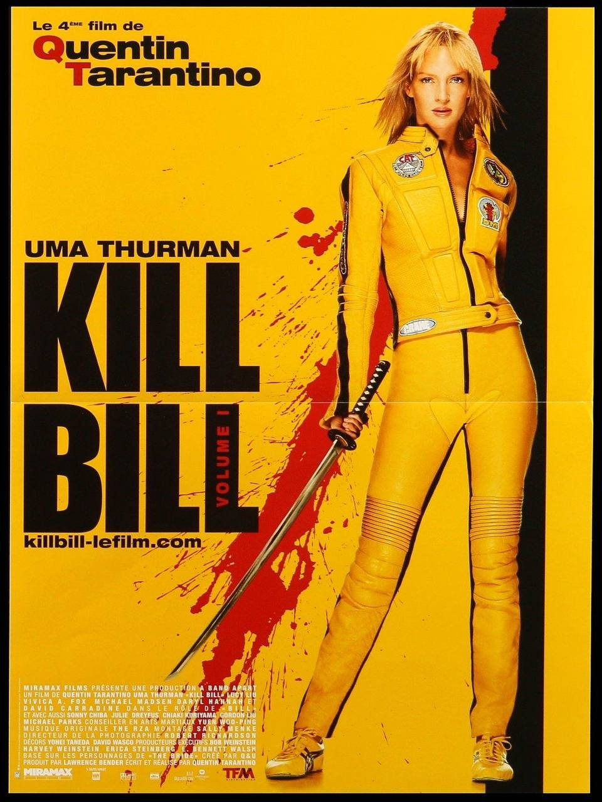
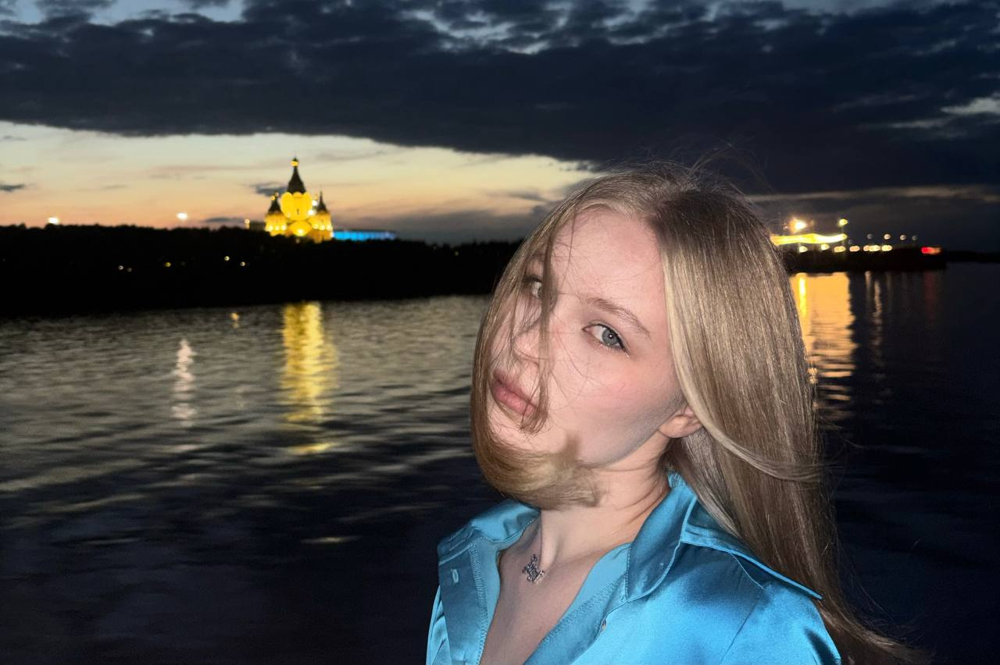
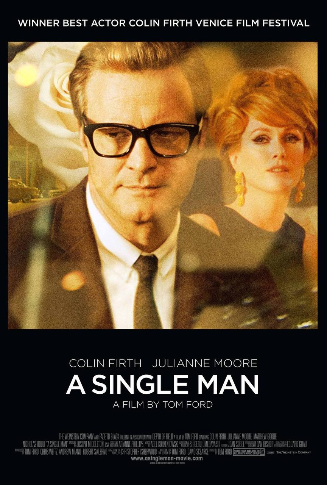
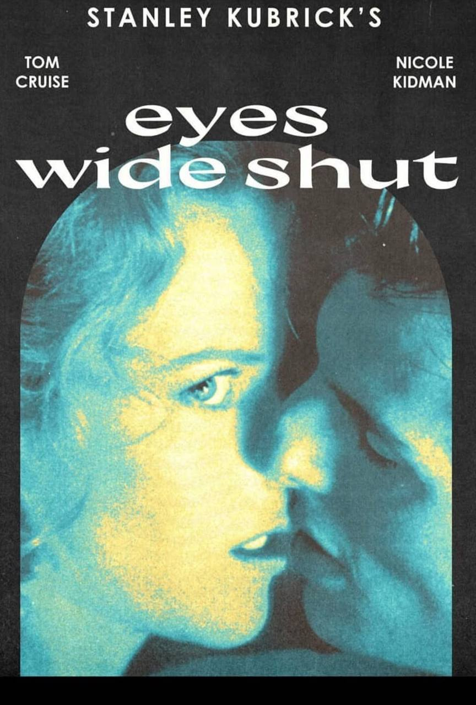
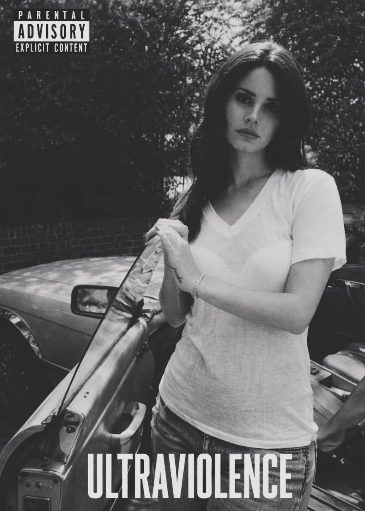
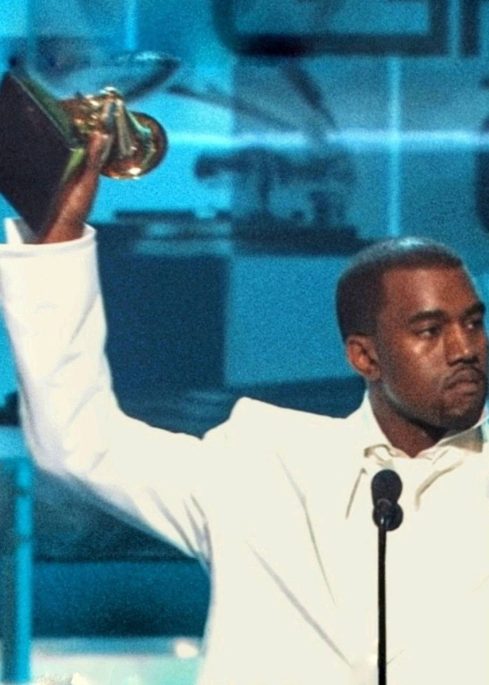
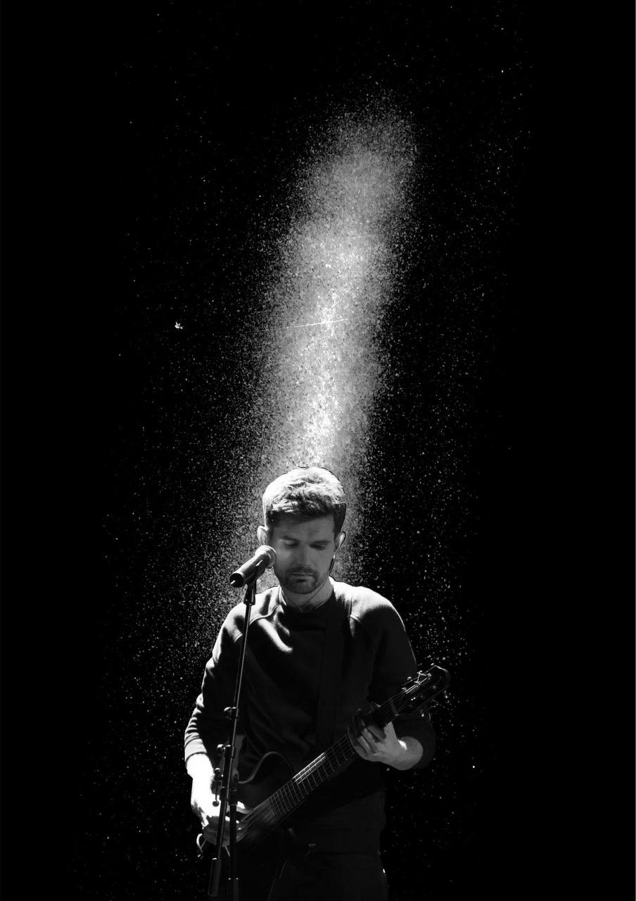
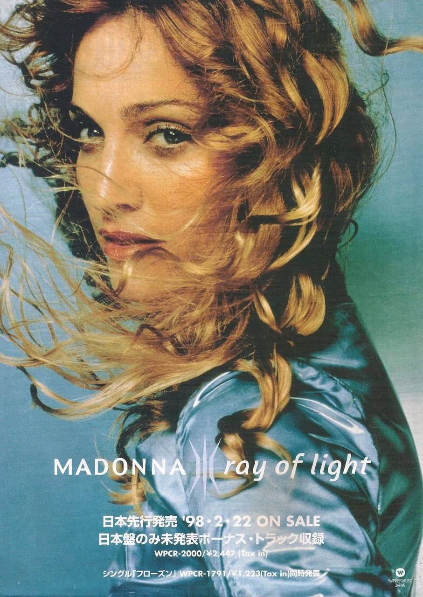
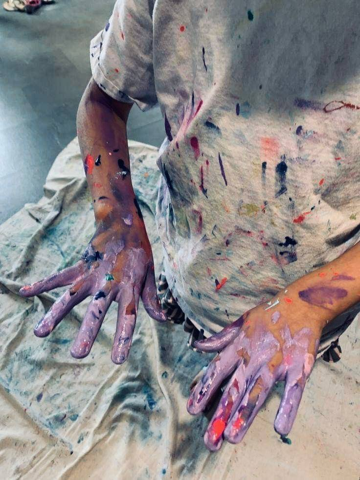
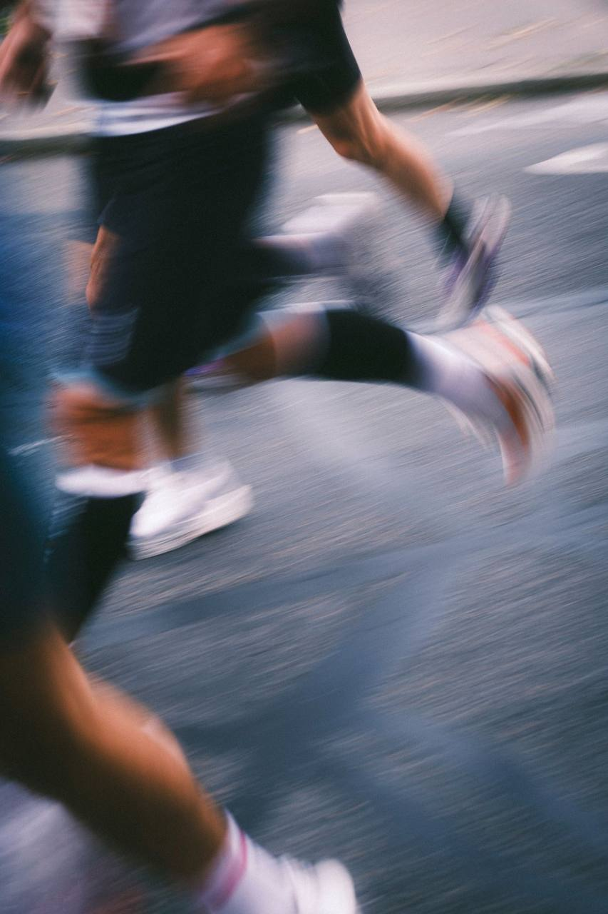

Убить Билла
Грандиозная одиссея мести Квентина Тарантино, наполненная смесью культур и безупречной хореографией боевых сцен

Учусь в НИУ ВШЭ НН, люблю бег, музыку и фильмы, иногда пишу
Последние два года интересуюсь UX-исследованиями и UX-дизайном

Грандиозная одиссея мести Квентина Тарантино, наполненная смесью культур и безупречной хореографией боевых сцен

Этот фильм Тома Форда люблю за глубокую, пронзительную историю о переживании утраты, потрясающую визуальную эстетику и невероятную передачу чувств

Картина Стэнли Кубрика глубоко обожаема мной за гипнотическую атмосферу ночного Нью-Йорка и честное, смелое исследование тайных желаний

Королева меланхолии и ностальгии

Непредсказуемость и эпатаж становятся чистым искусством

Конфликт юношеского бунта и ожидаемой социальной зрелости

Икона десятилетий

С 5 лет ходила в художественную школу, ездила на пленеры и конкурсы, сейчас пишу довольно редко, но очень люблю этот поцесс

С 12 лет начала бегать, занималась пять лет в спортивной школе, сейчас бегаю для души